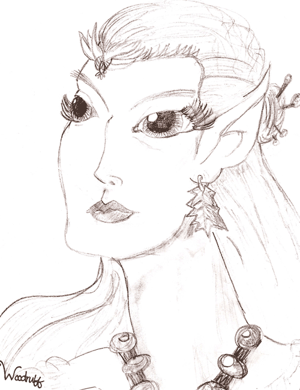

Jester-Knight
Literature
Film
Music
Visual Art
Tributes
Submissions
Links
Contact
Poetry | Lit | Jester-Knight | Essays
Mindmaps | Sutras | Resumes | Photo Gallery
A Little Bit about the Book and the Series
What have become the six books that make up the “Ambir Dragon Tales” began in 1988 as a series of metaphorical poems written while I was in college. I have always seen myself as having a dual personality and this became the starting point for the main character in the first book, Alde (later called Aldemere) who is born the son of a Jester and later becomes a Jester-Knight. In creating the Kingdom of Glittereye and the world of which it is a part (called Mynoweth) I have been able to bring together all my varied interests.
The books begin as a series of poems, and draw heavily on ancient and medieval history and the study of different religions/spiritual systems for the minute details I use to create a three-dimensional world of different races and edgy politics. The creation of a new mythology for Jesters, for the dragons of the world, and for many of the traditional fantasy and totally original races has been a terrific journey.
Jester-Knight is now available through the Book Bin website. Our creative team has created this amazing book trailer:
I am now in the process of writing the second book of the Ambir Dragon Tales, The Lost Stone of Ruenai, and the next four are in various stages of outlining and early poems.
Reviews of Jester-Knight:
Jester-Knight Review by Paige Ambroziak (.pdf) NEW!!!
“Joey Madia’s writing style in Jester-Knight, coupled with his imagination and depth of understanding, is precisely what our culture desperately needs: literature that empowers youth with the insight, courage, and wisdom much needed for undertaking the rites of passage into responsible adulthood where leadership is filled with heart and soul.”
—The Fisher King Review
“From the first time we meet young Alde, we are immediately engaged in his world. Perhaps it's his naive, yet spirited, attempts to follow in his forefathers' footsteps. Perhaps it's his developing role in the kingdom's fate. No matter what the initial reason for being drawn in, readers will find themselves wanting to match his stride as he patiently acquires the skills and discipline required of a knight of the realm. We watch as he learns to balance the jester's gift and the knight's might. We gladly set out with him as he continues to prove his mettle through immense physical and mental trials.
Complete with border wars, beast slaying, and court intrigue, this is not a faerie tale. Jester-Knight cleverly addresses the "big questions"—all while keeping a fine pace through this fantastic adventure. Madia also displays an impressive knowledge of the details of chevalry, battle, and weaponry—furthering the reader's immersion into this world.
(Dare I say) Readers who have enjoyed traversing the likes of the early Middle Earth & Narnia will delight and revel in the Kingdom of Glittereye.
More, please...”
—K.C., book store owner
“Jester-Knight takes us on an amazing journey with Alde, a smart-aleck kid on his way to manhood. Through Madia’s words we are able to go on adventures, play practical jokes, and even save an Elf! What more could a reader ask for? Fast-paced and fun, this is a definite must-read for any lover of fantasy and far away lands.”
—S.E., high school teacher
FAN ART

Nemmerle by Alyssa Woodruff